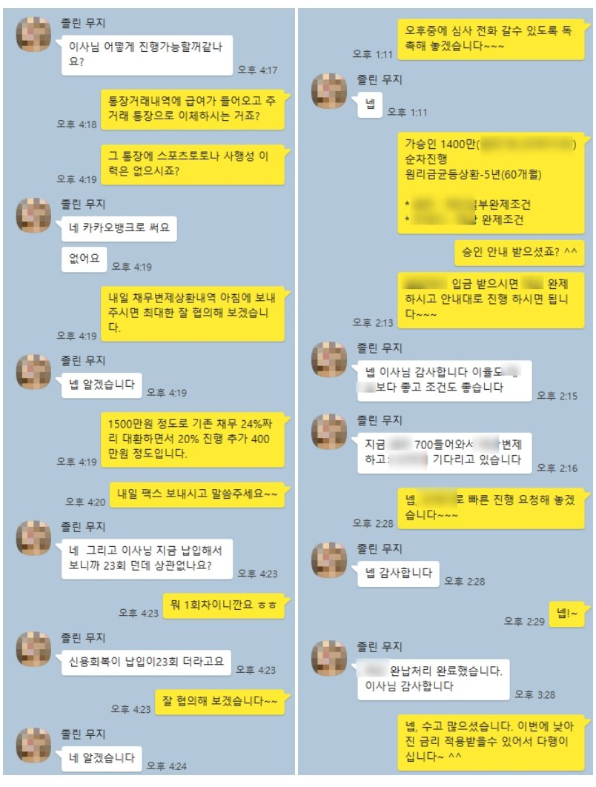

신용회복(개인워크아웃) 중 신용대출 1400만원 승인 사례
안녕하십니까? 뱅크앤론 조영우 이사입니다~
오늘은 신용회복 중인 고객님께 대부업 상환 조건으로 필요자금 마련해 드린 사례에 대하여 공유 드리겠습니다.
해당 고객님의 대략적인 프로필은 아래와 같습니다.
- 신용회복 23회납 (월변제금 26만원)
- 직장인 / 4대보험 가입 / 계약직
- 월급여 300만원 / 1년 6개월 근무
- 기대출 : 대부 2건 1100만원
사용 중인 대부업 대출 2건은 올해 7월 이전 발생 건으로 금리 24% 였습니다. 이에 기존 사용중인 대부업 대출 대환조건으로 1400만원 진행 드렸고, 금리를 낮추면서 추가금액도 마련할수 있게 되셨습니다.
아래는 고객님과 실제 대화한 내용이니 참고 부탁 드리겠습니다.
